8.8 Image Retrieval 图像检索 （上）
前言
本节介绍图像检索的概念及相关优化算法，为后续代码实践打下基础。
本节主要内容包括：
- 常用数据集
- 评价指标：R@K、mAP的计算
- 常用的loss
- 向量检索框架简介：Faiss、Milvus、Jina、Proxima和vearch都是工业界常用的向量检索框架
- 向量检索优化算法：LSH（局部敏感哈希）、HNSW（基于图的近似最近邻搜索）、PQ（乘积量化）、IVF（倒排检索）
- 检索中的排序：粗排、精排、重排的概念
图像检索简介
图像检索（Image Retrieval）指根据用户输入的信息进行图像查询，在数据库中查找出与之相似/相关的图像。
图像检索在电商、安防、医学领域有广泛应用，例如微信扫一扫、淘宝的拍立淘、搜索引擎的图片搜索功能等。
图像检索可根据输入的内容不同，可分为以文搜图和以图搜图。
以文搜图又称TBIR (Text Based Image Retrieval)，是通过图片名称、关键词等信息进行检索，是早期图像检索的方法，依赖于图像的描述信息。
以图搜图又称CBIR (Content Based Image Retrieval)，也叫基于内容的图像检索，也是目前主流的方法。CBIR的方式更符合人类视觉感觉，基于图像内容、图像相似度进行检索相似的图像。本节后续内容均以CBIR为例。
下图是图像检索系统的基础组件，通常分为offline和online两部分，offline主要构建图像数据库及特征数据库，online则是完成query图像特征提取，并从特征数据库中找到相似的特征，最终由推荐策略模块输出相似图像。

在构建图像检索系统时，需要关注：
- 特征提取器：传统方法中会基于SIFT、HoG等特征描述子，2012年后，主要是基于神经网络进行特征提取，获得特征向量，如1x768维，本文后续也会基于CLIP来进行特征提取。对特征提取器一个简单的要求是，相似图像的特征向量的欧氏距离要相近，差异大的图像的欧氏距离要大。特征提取模型可分为无监督与有监督的，无监督的主要采用视觉预训练模型进行特征提取，如CLIP， BLIP之类的，有监督的训练则可以采用CNN-base或者ViT-base的模型进行训练。
- 向量检索：如何快速的从亿万级的特征数据库中找到相似的那一批特征向量，这是向量检索及推荐策略需要考虑的，后续会介绍一系列快速的向量检索策略。
- 推荐策略：由于特征检索阶段采用了快速检索方法，势必损失一定精度，因此在后续需要做一些排序策略，如粗排、精排、重排等，最终输出相似的检索结果。
图像检索数据集
图像检索常用数据集并不多，常用的有Oxford-5k, UKBench, Holidays, Paris-6k
Oxford-5k 由牛津的11个建筑物的5062张图片构成，每个建筑物提供了5张query image。标签从官网下载，图片从paddle下载
UKBench 包含2550组，每组4张图，总共10200张图片，图片由日常生活中常见的物体构成，如物体、场景和CD封面等。下载链接：https://pan.baidu.com/s/1LAURtLwq8UYPW3cnetDCyg 提取码：yrsy
Holidays 是个人假日相册中收集的1491张图像，有500张query images， 991张相关图像。
Paris-6k 包含来自Flickr上爬取的6412张图片，由12组巴黎的建筑构成，总共提供了500张 query images进行评估。
数据从kaggle下载
图像检索评价指标
以图搜图中，常用的评价指标有mAP和R@1, R@5, R@10。
R@K：top-k个检索结果中的召回率(recall)，对于检索结果中存在目标结果的即判为召回，记1分， 总得分÷样本总数 = R@K。
假设我们有一个包含100张图片的数据集，进行一次图片检索，对于查询图片Query-img来说，100张图片里只有1张是相似的，GT为图片编号5，其它的都是负样本，假设算法返回的Top 10检索结果如下：
| 排名 | 图片编号 | 是否为真实目标 |
|---|---|---|
| 1 | 56 | 否 |
| 2 | 12 | 否 |
| 3 | 5 | 是 |
| 4 | 88 | 否 |
| 5 | 1 | 否 |
| 6 | 90 | 否 |
| 7 | 3 | 否 |
| 8 | 21 | 否 |
| 9 | 6 | 否 |
| 10 | 47 | 否 |
R@1，Top 1的图片编号为56，不是真实目标，因此R@1的值为0。
R@5，Top 5的图片编号为56、12、5、88、1，其中图片5是真实目标，因此R@5的值为1。
R@10，Top 10的图片中，其中图片5是真实目标，因此R@10的值为1。
假设有20张查询图片，统计20张查询图片的R@1，得到20个R@1，求平均，即可得到最终R@1。
由此可知，R@1≤ R@5≤ R@10。
mAP
mAP（mean average precision）是AP的平均值，对于每一张查询图片计算一个AP，求取平均。
AP值是PR（Precision-Recall）曲线下的面积，具体定义参考机器学习基础知识。
这里借助一个视频的示意图来讲解具体的计算
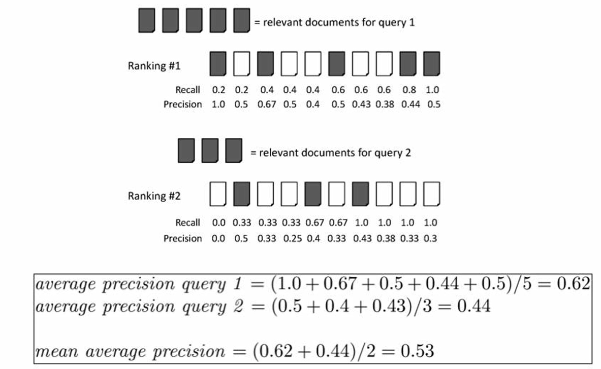
上图有两个查询，分别是query 1和query 2，其中黑色的样本表示正样本，是期望所检索到的样本，白色是负样本。
对于查询图像1，有5个相关结果，检索的排序结果如图所示，分别排在了1,3,6,9,10。
AP是将5个结果的Precision求平均，每个结果的Precision为 “标签次序÷结果次序”。
因此查询图像1的AP = （1/1 + 2/3 + 3/6 + 4/9 + 5/10）/ 5 = 0.62
mAP则是将所有查询图像的AP求取平均，如上例，为 (0.62+0.44) / 2 = 0.53
图像检索常用loss
图像检索选择特征提取器时，如果需要自行训练一个特征提取器，通常会选择一个适合的loss来约束模型输出的特征向量。
这里可能不好理解，先从图像分类模型思考，分类模型输出层前一层通常认为是对图像的特征描述，这个特征向量被认为是具备图像语义信息的描述，它只需要经过一个分类层，就能实现图像分类。
Triplet Loss
同理，也可把该特征向量认为是图像的描述，用于图像检索，但是图像检索里，还希望相同类别的向量的欧氏距离要近，不同类别的向量要远。
这时就可以在此处增加一个Triplet Loss（三元组损失函数）进行训练，triplet loss训练时有3个样本，分别称为anchor， negative， positive。
A表示目标图片，N表示负样本，要与目标图片远离的， P表示正样本，与A是同类型图片，要接近的。
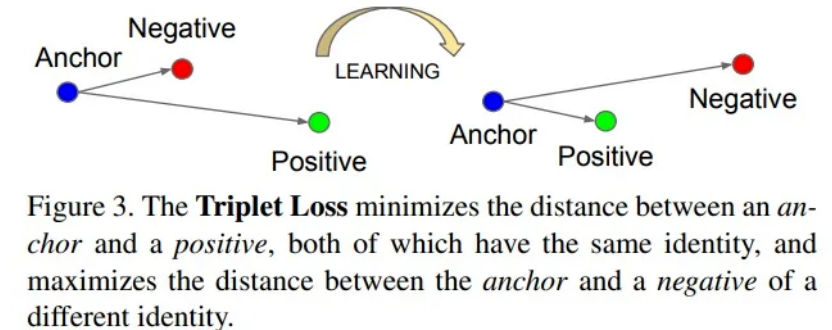
更详细的triplet loss请阅读原论文，提出triplet loss是为了解决人脸比对问题的，后来拓展到各类对比任务中。在图像检索任务中，Triplet Loss同样具有较好的表现。通过将同一类别的图片的嵌入向量尽可能地接近，而将不同类别的嵌入向量尽可能地远离，可以实现高效的图像检索。
(N+1)-tuplet loss
三元损失函数考虑的 negative 样本太少，以至于收敛慢，为此，研究者提出了(N+1)-tuplet loss，一次考虑N-1个负样本，N=2时，等价于 triplet loss。
(N+1)-tuplet loss 如下图所示
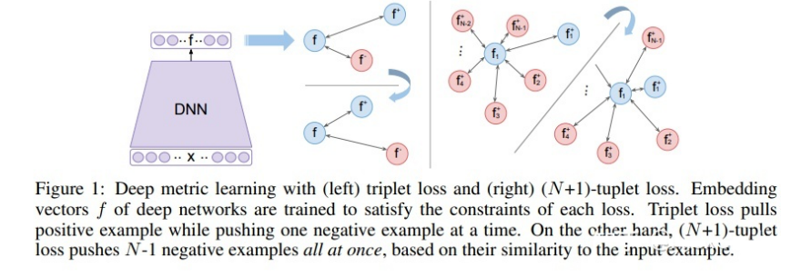
N-pair Loss
(N+1)-tuplet loss 有个缺点是计算量大，需要计算N-1个负样本的距离，推理成本过高。
为此，提出了N-pair Loss，巧妙的实现样本的重复利用，减少了负样本的多次运算。N-pair loss 思想是把其他样本的正样本作为当前样本的负样本，这样就不用重复计算不同样本的负样本，只需要计算 N 次即可得出。
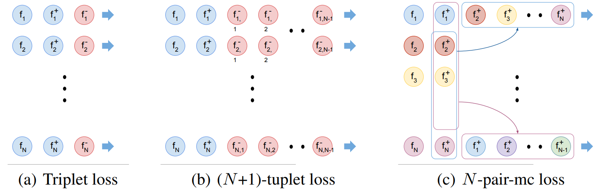
除了 triplet loss 思路外，还可以借鉴其它类似任务的loss，例如：
人脸：ArcFace，sub-ArcFace
类内损失：center loss， Island loss
类间损失：cosface
度量学习任务：Multi-Similarity Loss， Contrastive Loss / Pairwise Ranking Loss，SimCSE loss， Smooth AP
更多loss参考论文2021年的Deep_Image_Retrieval_A_Survey
检索核心技术——向量检索
向量检索概念
图像检索的核心技术之一是向量检索，也称向量索引、相似度匹配，是将query向量与数据库中万亿级的向量进行相似度匹配，要求又快又准的找出相似向量。
向量相似度可以通过欧氏距离、余弦距离、汉明距离等距离度量方法来计算，通常float类型采用欧氏距离，二值哈希采用汉明距离。
对于欧氏距离、余弦距离来说，时间复杂度为O(nd)，其中n是数据集中向量的数量，d是向量的维度，这对于亿万级的检索是不可接受的。
为了实现快速的向量检索，针对暴力检索（精确检索）有一系列的优化算法，例如基于树的KD-Tree，基于图的NSW、HNSW， 倒排索引、PQ（乘积量化，Product-Quantization）等。
由于采用了快速索引，必然导致精度损失，因此在向量检索之后，通常有排序算法的介入，一般有粗排、精排和重排，这个在下一小节讲解。
向量检索框架
向量检索不仅可用于图像检索，在搜索引擎、短视频推荐、商品推荐等领域均是基础模块，有较多开发者及对应的产品，因此，可以选择开源的向量检索引擎，而无需造轮子。
下面简单总结几款常用的框架
Faiss：由 Facebook 开发的适用于稠密向量匹配的开源库。
- 支持相似度检索和聚类
- 支持多种索引方式
- 支持CPU和GPU计算
- 支持Python和C++调用
- 常见的人脸比对，指纹比对，基因比对等
- 缺点是单机部署，无法分布式
Milvus：是一个开源的分布式向量搜索引擎。集成了成熟的向量相似度搜索技术，包括Faiss、Annoy、NMSLIB等。
Jina ：Jina AI公司开发，是一家专注基于深度学习模型搭建搜索引擎技术的开源商业公司
Proxima：阿里巴巴达摩院自研的向量检索内核，通用化的向量检索工程引擎，实现了对大数据的高性能相似性搜索，支持 ARM64、x86、GPU 等多种硬件平台
vearch：是京东开源一个分布式向量搜索系统，可用来存储、计算海量的特征向量，在 faiss 的基础上研发了 vearch，提供了类似 ElasticSearch 的灵活易用的 RESTFul API，可以方便地对表结构及数据进行管理查询。
更多框架介绍推荐阅读几款多模态向量检索引擎
Faiss简介
对于80%的场景，基于faiss足以满足需求，并且faiss开源早，性能强大，功能多，且易上手，这里就介绍Faiss的使用及常用算法的原理。
Faiss由 Facebook AI开发及开源，适用于亿级的稠密向量检索，并且部分算法支持GPU加速。
faiss中常用的算法有，精确检索FlatL2、FlatIP，局部敏感哈希LSH（Locality-Sensitive Hashing），基于图的近似最近邻搜索 HNSW，倒排检索 IFS（Inverted File System，倒排）和 乘积量化PQ（Product Quantization）。
更详细介绍，参见faiss wiki
最常用的算法是倒排、乘积量化，接下来会对上述4个算法进行介绍，并详细介绍倒排与乘积量化。
LSH——局部敏感哈希
LSH是哈希算法中的一种，是将向量映射为标量，并进行分桶，距离较近的向量在哈希后映射到同一个桶的概率较高，反之概率较低，这个性质称之为局部敏感。
下面借助一位Up主的讲解及代码，解释LSH实现过程：
- 选择一系列hash functions，对原始数据进行投影，一个样本变为一个标量
- 选择分桶间隔w，标量除以间隔w，并向下取整，获得样本的hash编码
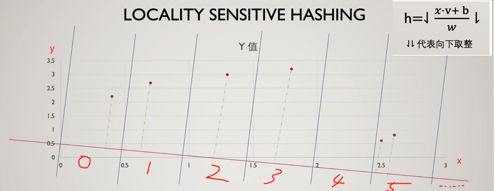
如上图，6个数据经过一次投影后得到的hash编码分别是 0, 1, 2, 3, 5, 5，选择多个hash functions即可得到一个样本的多个编码，即可构成一个编码向量。
hash function到底要选择怎样的投影方式，才能使得距离较近的向量在哈希后映射到同一个桶的概率较高，反之概率较低呢？
其实这里可以直接采用高斯分布采样得到的向量，与样本x进行点乘即可，这个可以通过P稳定分布定义进行证明，详情可参见第八讲 图像检索
下面看一个具体案例，包含8个向量，采用4个hash functions进行编码，得到的编码如下。
可以看到，样本7和样本8的4个编码都相同，表明它们很类似。
同理，样本1和样本2的hash编码也很类似，因它们的样本数据比较类似。
原始数据：
[[8, 7, 6, 4, 8, 9], [7, 8, 5, 8, 9, 7], [3, 2, 0, 1, 2, 3], [3, 3, 2, 3, 3, 3], [21, 21, 22, 99, 2, 12],
[1, 1, 1, 0, 1, 0], [1, 1, 1, 1, 1, 0]]
编码向量：
[3.0, 3.0, 0.0, 1.0, 8.0, 0.0, 0.0]
[5.0, 5.0, 1.0, 2.0, 32.0, 1.0, 1.0]
[4.0, 4.0, 1.0, 2.0, 22.0, 0.0, 0.0]
[7.0, 6.0, 2.0, 3.0, 21.0, 1.0, 1.0]
import numpy as np
import random
def getHash(v, x, b, w):
return (v.dot(x) + b) // w
def dealOneBuket(dataSet):
k = dataSet.shape[1]
b = random.uniform(0, w)
x = np.random.random(k)
buket = []
for data in dataSet:
h = getHash(data, x, b, w)
buket.append(h)
return buket
if __name__ == "__main__":
dataSet = [[8, 7, 6, 4, 8, 9], [7, 8, 5, 8, 9, 7], [3, 2, 0, 1, 2, 3], [3, 3, 2, 3, 3, 3], [21, 21, 22, 99, 2, 12],
[1, 1, 1, 0, 1, 0], [1, 1, 1, 1, 1, 0]]
dataSet = np.array(dataSet)
w = 4
hash_funcs_num = 4
for _ in range(hash_funcs_num):
print(dealOneBuket(dataSet))
HNSW——基于图的近似最近邻搜索
HNSW（Hierarchical Navigable Small World）是一种以空间换时间的基于图的最近邻搜索，属于基于层级结构的ANN（Approximate Nearest Neighbor）算法，通过建立多层图结构实现高效的最近邻搜索。其核心思想是在每一层图中使用稠密连接的方式建立向量之间的联系，同时保持局部连通性，从而形成“小世界”网络。
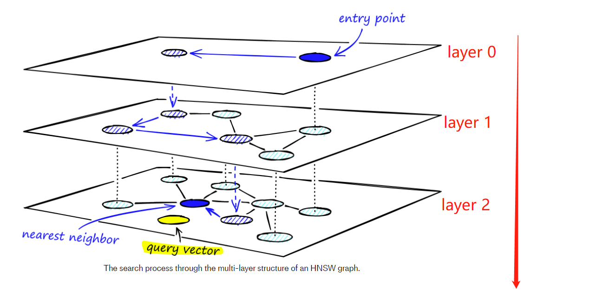
分层机制类似高速公路，顶层是省份间的连接，往下则是城市之间，城市内部之间的连接，由大到小的缩小检索范围。
更详细理解，推荐阅读Faiss的手册
倒排索引的优点是可以快速地定位包含某个特征的向量，适用于高维稠密向量。但是在处理高维稀疏向量时，倒排索引的效果会受到影响。
总之，倒排索引是向量检索算法中重要的一种索引方式，可以大幅提高检索效率和准确性。
PQ —— 乘积量化
PQ（product quantizaition）是2011年，Herve Jegou等学者在PAMI上发表的论文《Product quantization for nearest neighbor search》，提出的一个快速向量检索算法。
PQ方法可以减少几十倍的RAM消耗，并且获得数倍的速度提升，并且精度损失不是很大，非常适合高维向量检索任务的优化。
PQ算法的思想是将原始向量分解为多个子向量，并对每个子向量进行量化，从而将高维空间中的向量转换为一个小的离散码本，编码代表子向量所处的聚类中心的编号。查询向量需要与子向量的聚类中心进行距离计算，获得距离表，随后数据库向量根据编码进行查询，即可获得查询向量与被索引向量的距离，最后对子段距离求和、排序。
PQ的思想可以总结为，将高维向量划分子段，并且利用子段的聚类中心来代替原始数据，查询向量只需要与聚类中心计算距离，即可实现所有向量距离的近似计算。
下面以一个1000个128维向量数据库为例，讲解PQ过程。
第一步，pre-train，获得聚类中心。
第二步，对数据库向量进行编码。
第三步，查询向量与聚类中心计算距离表。
第四步，查询所有向量与查询向量的距距离求和、排序，得到结果。
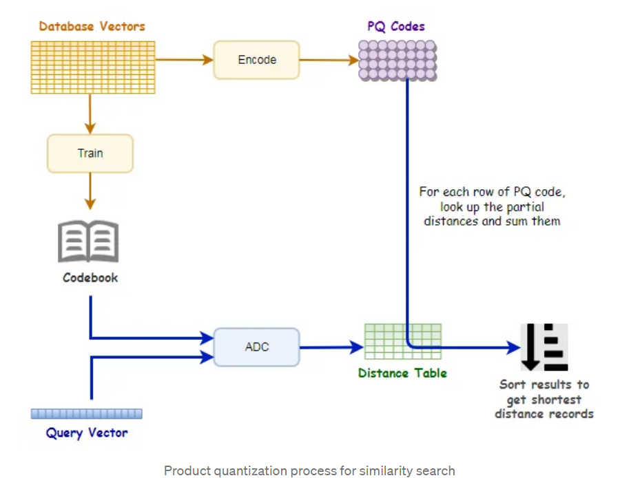
第一步：pre-train，对128维向量划分为M份，这里划分8个子段，每个字段长度为16，针对每个字段进行K-means聚类，聚为256类（256是作者自定义的）。
打不严谨的比方，1000个向量分为256类，平均4个向量为一簇，由1个聚类中心向量代表，后续查询向量只需要与聚类中心比较，就可知道查询向量与4个向量的距离了。简单理解就是聚类簇中的向量统一由聚类中心作为代表，查询向量与中心近，那么就与类成员近，以此减少计算量。
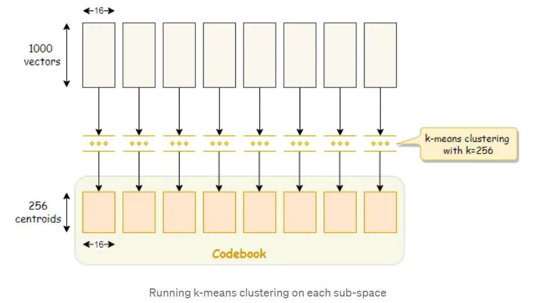
第二步，对数据库向量进行编码，得到数据库的PQ code，这个code的作用是用于查表的，即每个向量它被谁代表了，后续只需要去找“代表”获取距离，而不是与查询向量计算距离。
1000个128维向量，最终的PQ code为 1000x8bit的码表，码表上的值表示它归属于哪个聚类中心，如第一个向量的第一个字段为2，则说明它属于第二类，它后续与查询向量的距离只需要查看，查询向量与第二个聚类中心的距离即可。

经过PQ编码，内存的效果显著下降，下降了64倍，64来自128维下降到了8维，这里减少了16倍；数据精度由32b减少到了8b，这里减少了4倍，总共64倍。
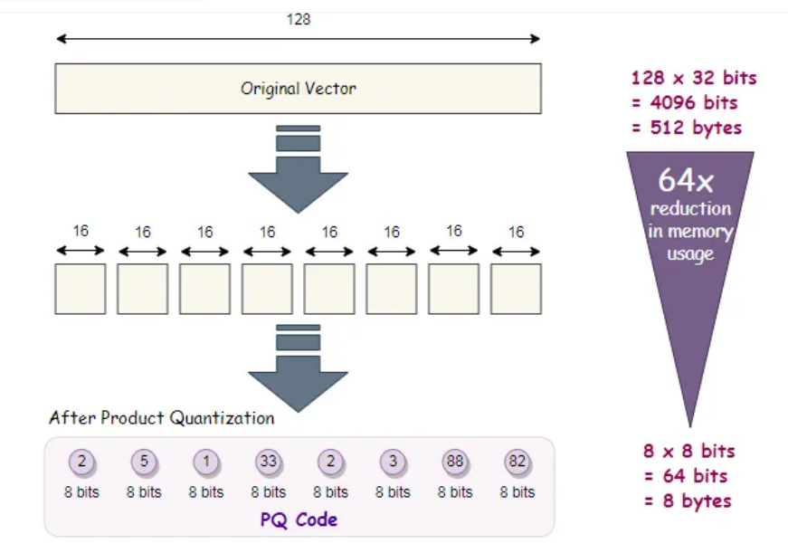
第三步，查询向量与聚类中心计算距离，获得查询向量与聚类中心的距离表（256x8）。
例如查询向量为[1, 2, ..., 128]，首先对第一子段进行256个聚类中心的距离计算，采用[1, 2, 3, 4, 5, 6, 7, 8]与256个聚类中心计算距离，填入Distance Table的第一列，
以此类推，获得256x8的距离表。
距离表的作用是供PQ code查询的，前面提到，数据库向量已经被代表了，被聚类中心代表，查询向量不与数据库向量直接计算距离，而是与聚类中心计算距离。
数据库向量只需要找到它的代表与查询向量的距离即可，因此PQ code是 Distance Table的索引，只需要查表即可获得数据库向量与查询向量的距离。
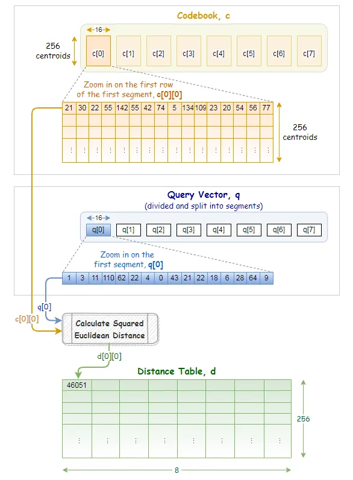
第四步，查询所有向量与查询向量的距距离求和、排序，得到结果。
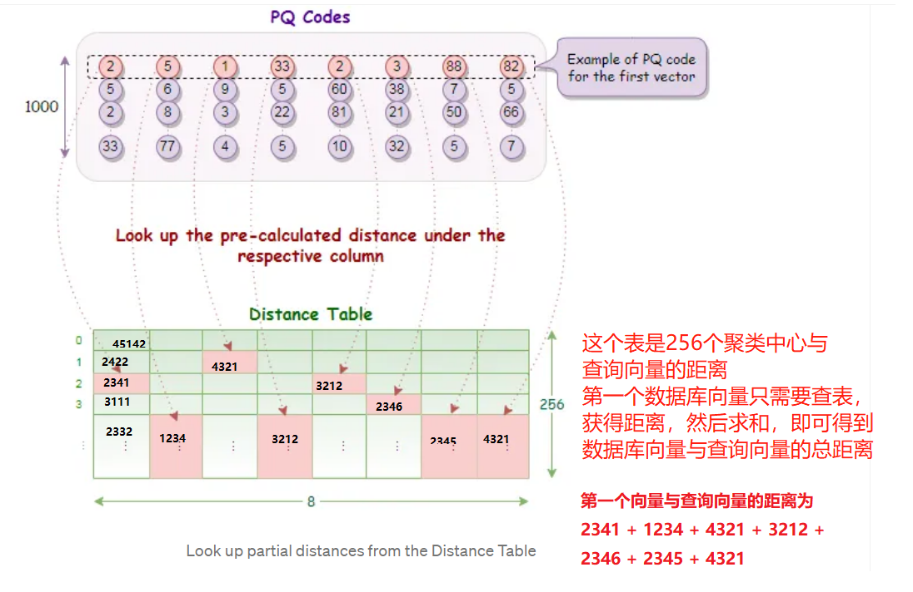
PQ算法巧妙的采用了代表（聚类中心），以此减少运算复杂度，同时得益于代表（聚类中心），数据库无需存储所有数据，只需要存储所处聚类的编号，从存储上优化了算法。
IVF —— 倒排检索
IVF（Inverted File Index），倒排文件索引，用于快速地定位包含某个特征的向量。其中使用了聚类分组、倒排索引的方法来加速索引速度。
这里的Inverted Index 是著名的倒排索引算法，最早来自文本搜索领域，关于Inverted Index的命名及翻译，让人多少有些困惑，倒排？怎么倒？怎么排？
其实这里和“倒”没啥关系，更好的中文意译是，分词索引或反向索引。详见知乎问题
Inveted Index是从文档检索中提出的，以往检索文档是通过一个一个文档中从头到尾比对，是否存在关键词，是文档-->关键词的方式；倒排则是将文档中文字进行分词，并且构建词到文档编号的一个字典索引，查询时只需要根据字典的key索引，可得到哪些文档中存在这些关键词。
这里借助 喔喔牛的回答 - 知乎
假设有一个文档数据库，共5分文档，现在需要检索“wave”关键词在哪份文档中，正向索引则是挨个文档一次检索匹配“wave”，到了第4个文档的中间才能找到，相当耗时。
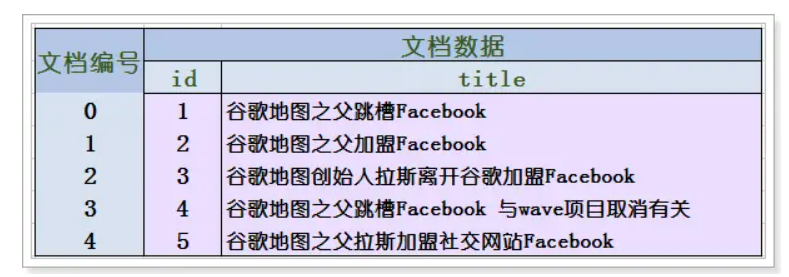
倒排索引的思路是将文档中的词先拆分，需要用分词工具把文档打散称为一系列word，然后构建关键词到文档的关系字典。
如下图，通过倒排索引字典，直接获取文档3是包含"wave"的，效率提升显而易见。
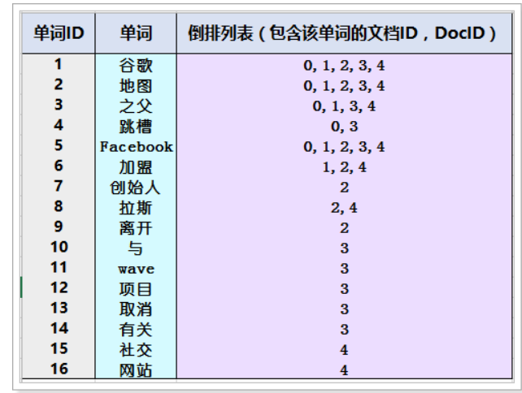
回到Faiss中的IVF，IVF是将向量先分为nlist个组，每组有一个聚类中心及类别id，通过构建聚类中心+类别id 到 向量的索引字典，可以快速的找到查询向量与哪一些数据库向量是相近的，与上文的PQ量化中的聚类类似，一群被检索向量采用聚类中心作为代表。
具体地，IVF算法流程如下：
- 将数据集进行聚类，得到若干个簇（nlist个），每个簇有一个代表它的中心点；
- 为每个簇建立一个倒排文件，key是聚类中心，value是簇内所有向量；
- 对于一个查询向量，计算其与每个簇中心点的距离，确定其所属的簇；
- 在所属簇的倒排文件中搜索与查询向量最相似的数据点。
在实际实现时，还会针对边缘问题，提出所个类簇的比对，如下图所示，对聚类中心最新的8个类簇内所有向量均进行比对，以此提高召回。详情可见Faiss中的IVF
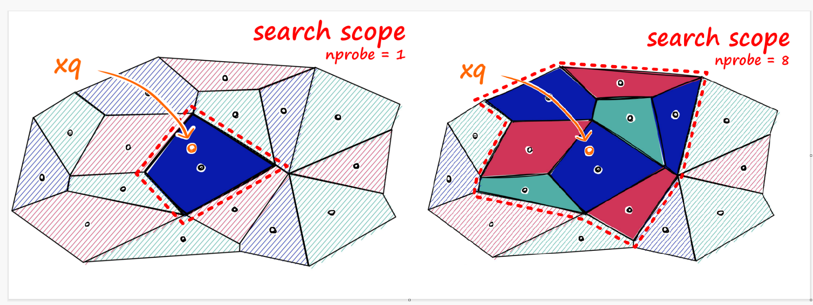
IVF+PQ
Faiss中用得更多的是将IVFPQ，主要是用IVF中的方法来减少搜索向量范围，然后利用PQ的索引。product-quantization中对FlatL2（精确检索）、PQ和IVFPQ进行了对比，可见IVFPQ速度快，并且召回与PQ相当。
这里需要注意的是IVF中的nlist和nprobe是超参，需要仔细选择，尤其是nprobe，文中实验采用了nprobe=48才达到52%的召回，nrpobe越高，召回越高，但是时间越慢。
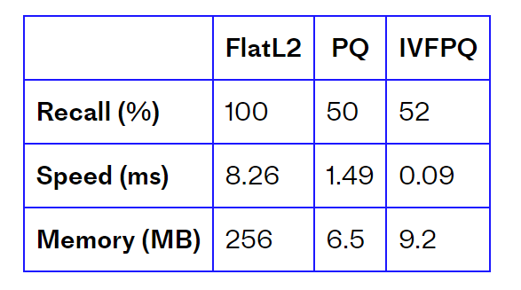
检索核心技术——粗排、精排、重排
上文提到的一系列向量检索方法仅仅是检索的第一步——召回，通常一个检索系统是级联式的，多层级一步一步的由粗到精，得到最终输出结果。
如下图所所示
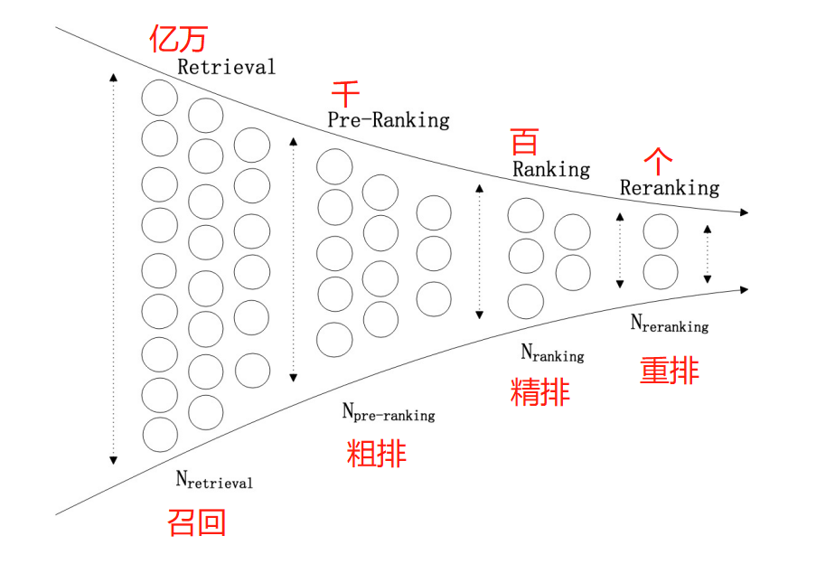
- 召回，是处理亿万级别数据量，要求的是速度快，精度可以不高，但别漏，去粗取精还有粗排、精排和重排来完成，但是漏了的话，后续是没办法“生成”、找回的。
- 粗排，是召回和精排之间的过渡，速度比精排快，但精确度不需要那么高。
- 精排，核心层，直接决定检索推荐的效果；
- 重排，根据业务逻辑，决定哪些item的顺序需要调整。
总结下来，推荐算法的这一套级联策略——召回、粗排、精排、重排，与其电商业务、互联网搜索业务息息相关，每一个模块为了处理特定了业务逻辑而设计的一个操作。
例如第一步召回是从亿万级数据捞数据的过程；
粗排、精排是根据特定的业务背景设计算法、模型，详见知乎文章；
重排也是根据业务逻辑，例如为了提升用户的多样性体验，扶持业务产品，这时在重排层则需要写一些固定的逻辑判断来重排。
在图像检索领域，较少涉及粗排、精排，通常只需要做一个重排，图像检索的重排技术非常细分，这里不进行介绍了，感兴趣自行阅读一下论文：
扩展查询（Query Expansion）
- Ondrej Chum, James Philbin, Josef Sivic, Michael Isard, and Andrew Zisserman. Total recall: Automatic query expansion with a generative feature model for object retrieval. In Proceedings of the IEEE International Conference on Computer Vision and Pattern Recognition, pages 1–8, 2007. 1, 2, 3, 9
- Ondˇ rej Chum, Andrej Mikulik, Michal Perdoch, and Jiˇ rí Matas. Total recall ii: query expansion revisited. In Proceedings of the IEEE International Conference on Computer Vision and Pattern Recognition, pages 889–896, 2011
几何信息法（Geometric Context Verification (GCV)）
- Yannis Avrithis and Giorgos Tolias. Hough pyramid matching: Speeded-up geometry re-rankingfor large scale image retrieval. International Journal of Computer Vision, 107(1):1–19, 2014
行人重识别中假阳过滤：Box Re-Ranking_ Unsupervised False Positive Suppression for Domain Adaptive Pedestrian Detection
基于Transformer的重排：Contextual Similarity Aggregation with Self-attentionfor Visual Re-ranking
小结
本小节介绍了图像检索技术的概念、数据集、损失函数和常用的评价指标，然后介绍了检索的两大核心技术，向量检索与排序。
向量检索中最常用的是PQ+IVF，这也将在后续代码实现中进行使用以及讲解，LSH和HNSW也有自己的特点，可根据是否需要用空间换时间来决定选择。
检索任务的排序环节包括一系列的操作，有粗排、精排、重排等操作，就像一个漏斗，逐步去粗取精，每一步都是与业务场景息息相关，在图像任务中往往只需要一个重排就ok了。
本节整体介绍图像检索概念及实现技术，下一节将介绍Faiss库的使用、构建基于CLIP模型的图像检索算法、基于Flask部署图像检索系统等。